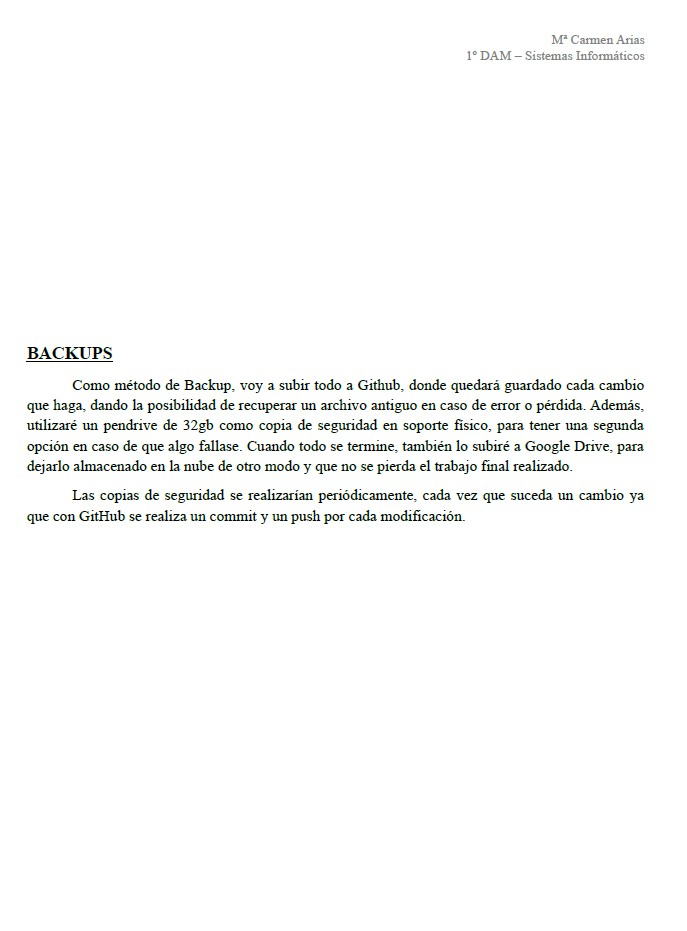

Autora:
Mª Carmen Arias de Haro.
Centro:
Cenec Málaga.
Titulación y curso:
1º Desarrollo de Aplicaciones Multiplataforma.
Asignaturas:
Lenguaje de Marcas.
Sistemas Informáticos.
Entornos de Desarrollo.
Profesor:
Carlos Boni Niklison.
Fecha:
31 de mayo de 2021.
Diagramas empleados para la web, backups y criterios SEO:
